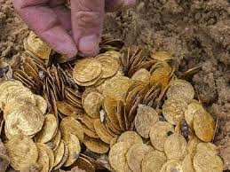

Kayseri Hacılar Meydanında Milyon TL'lik Vurgun !!
Kayseri'nin tarihi Hacılar Meydanı, sıradışı bir olaya ev sahipliği yaparak şehir gündemini sarsmaya devam ediyor. Meydanın derinliklerinde bulunan tarihî bir gömü, milyonlarca liralık vurguna ev sahipliği yaptığı ortaya çıktı. Gömüdeki bu olağanüstü durum, uzun bir süre sır olarak kaldıktan sonra gün yüzüne çıktı ve şehirde büyük bir çalkantıya sebep oldu.
Olayın ortaya çıkmasının ardından güvenlik güçleri, hızla harekete geçerek olayın detaylarını aydınlatmaya çalışıyor. İlk incelemelere göre, gömüdeki vurgunun planlı ve organize bir şekilde gerçekleştirildiği belirtiliyor. Yetkililer, bu olayın şehirdeki ekonomik dengeleri etkileyebilecek nitelikte olduğunu ve soruşturmanın titizlikle sürdüğünü açıkladı.
Milyonlarca liralık vurgunun ortaya çıkmasıyla birlikte, şehirdeki vatandaşlar da olaya büyük bir şaşkınlık ve tepkiyle karşılık veriyor. Halk arasında, bu olayın şehirdeki sosyal ve ekonomik yaşantıyı ne kadar etkileyeceği konusunda birçok spekülasyon ve değerlendirme yapılıyor. Haber, şehirdeki birçok kişi tarafından büyük bir merakla takip ediliyor ve olayın gelişmeleri yakından izleniyor.